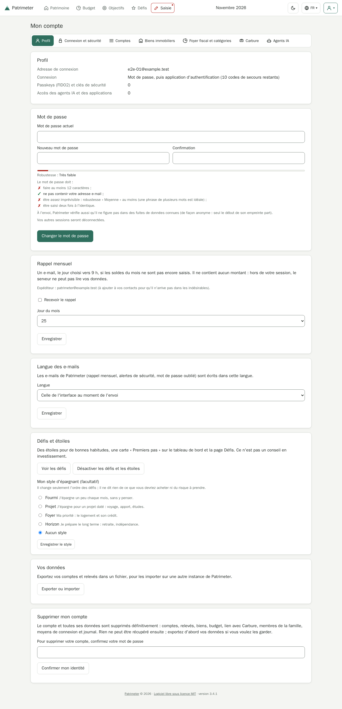
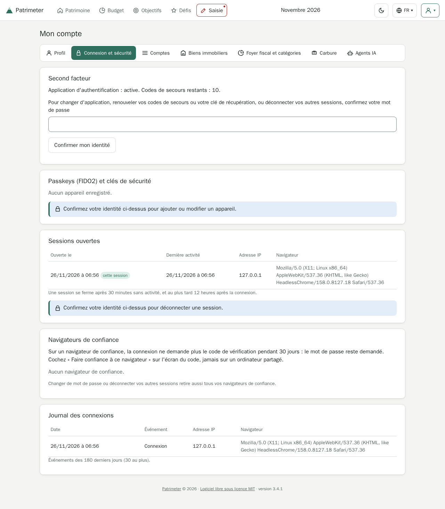

Mon compte¶
Le bouton Mon compte (icône de profil), en haut à droite de chaque page, ouvre le menu du compte :
- Mon profil : la page Mon compte ;
- Agents IA : jetons et applications de l'API et du service MCP, si l'administrateur les a activés (API et MCP) ;
- Documentation : cette documentation, dans la langue de l'interface (si l'administrateur la propose) ;
- Déconnexion.
La page Mon compte se découpe en onglets, pour retrouver vite ce qu'il y a à régler : tout le paramétrage y est réuni (comptes, biens immobiliers, foyer et catégories du budget, Carbure), et le menu principal ne garde que Patrimoine, Budget et Saisie du mois. Les actions sensibles (changer d'application, nouveaux codes de secours, nouvelle clé de récupération, déconnecter les autres sessions, créer un jeton, exporter ses données, supprimer le compte) demandent de confirmer votre identité : mot de passe, valable 5 minutes.

| Onglet | Sections | Pour |
|---|---|---|
| Profil | Profil, Mot de passe, Rappel mensuel, Langue des e-mails, Vos données, Supprimer mon compte | Adresse de connexion et moyens de connexion ; changer le mot de passe (l'actuel est demandé, vos données restent lisibles) ; rappel mensuel par e-mail ; langue des e-mails ; export et import ; supprimer le compte |
| Connexion et sécurité | Second facteur, Passkeys (FIDO2) et clés de sécurité, Sessions ouvertes, Navigateurs de confiance, Journal des connexions | Changer d'application, régénérer les codes de secours, nouvelle clé de récupération ; ajouter, renommer ou supprimer une passkey ou une clé FIDO2 ; sessions ouvertes, à déconnecter une à une ou toutes ensemble ; navigateurs de confiance, à retirer ; connexions réussies ou refusées, avec l'adresse IP : repérez une tentative suspecte |
| Comptes | Comptes par niveau, comptes archivés | Créer, modifier, archiver un compte ou un crédit (comptes et crédits) |
| Biens immobiliers | Un tableau par bien | Créer un bien et ses crédits, votre part (biens immobiliers) |
| Foyer fiscal et catégories | Foyer fiscal, catégories et postes du budget | Adultes, enfants (années de naissance), cible d'épargne de précaution, catégories et postes (budget du foyer) |
| Carbure | Votre instance, correspondances | Relier votre instance Carbure et rapprocher ses catégories de celles du budget (Carbure) |
| Agents IA | Connecter un agent IA, API et applications | Adresses du service MCP et de l'API, jetons personnels et accès accordés à des applications (API et MCP) ; onglet absent si l'API et le MCP sont désactivés |

Un e-mail vous prévient de chaque changement de sécurité. Si vous n'en êtes pas l'auteur, il indique quoi faire : changer de mot de passe depuis Mon compte, ou, quand le changement a pu vous fermer l'accès (mot de passe changé ou réinitialisé, application d'authentification remplacée, compte supprimé), prévenir l'administrateur du serveur.
Sessions ouvertes¶
Dans l'onglet Connexion et sécurité, le cadre Sessions ouvertes liste, comme le journal des connexions, chaque appareil où vous êtes connecté : date de connexion, dernière activité, adresse IP et navigateur ; la vôtre porte la mention cette session. Une session se ferme seule après 30 minutes sans activité, et au plus tard 12 heures après la connexion.
Après avoir confirmé votre identité, Déconnecter ferme une autre session, et Déconnecter mes autres sessions les ferme toutes sauf la vôtre (les jetons de l'API tombent aussi). L'appareil concerné revient à la page de connexion dès sa requête suivante. Un appareil que vous ne reconnaissez pas : déconnectez-le, puis changez de mot de passe.
Pour ajouter ou modifier une passkey ou une clé FIDO2, la page rappelle, mis en évidence, de confirmer d'abord votre identité dans le cadre Second facteur.
Navigateurs de confiance¶
Sur l'écran du code de vérification, cochez Faire confiance à ce navigateur pendant 30 jours : sur ce navigateur, les connexions suivantes ne demandent plus que le mot de passe (ou la passkey), sans le code, pendant 30 jours. Ne le cochez jamais sur un ordinateur partagé ou public.
Le cadre Navigateurs de confiance de l'onglet Connexion et sécurité les liste : date d'ajout, dernière utilisation, fin de validité, adresse IP et navigateur ; le vôtre porte la mention ce navigateur. Après avoir confirmé votre identité, Retirer en retire un, et Retirer tous les navigateurs de confiance les retire tous : le code sera de nouveau demandé à la connexion suivante. Changer de mot de passe ou déconnecter vos autres sessions les retire aussi tous. Le journal des connexions note chaque connexion sans code (« Connexion sans code (navigateur de confiance) »).
Rappel mensuel¶
Rappel mensuel (onglet Profil) : cochez Recevoir le rappel et choisissez le jour du mois. Ce jour-là, à partir de 9 h (heure de l'instance), si aucun solde du mois n'est saisi, Patrimeter vous envoie un e-mail avec un lien vers la saisie ; une seule fois par mois. La section indique l'adresse de l'expéditeur : ajoutez-la à vos contacts pour que le rappel n'arrive pas dans les indésirables. Il ne contient aucun montant : hors de votre session, le serveur ne peut pas lire vos données. Avec les défis activés, il donne aussi votre série de saisies et ce que la saisie du mois lui apporterait (« En saisissant novembre 2026, votre série passe à 3 mois : une nouvelle étoile du défi « Série de saisies ». ») : seuls les mois saisis et les étoiles gagnées servent, jamais un montant. Le lien en bas de l'e-mail désactive le rappel sans vous connecter (une page, puis un bouton). Le rappel n'existe que si l'instance envoie des e-mails.
Langue des e-mails¶
Langue des e-mails (onglet Profil) : Français, English, ou Celle de l'interface au moment de l'envoi (le choix par défaut). Elle s'applique à tous les e-mails de Patrimeter : rappel mensuel, alertes de sécurité, mot de passe oublié, suppression du compte.
Supprimer votre compte¶
Onglet Profil, section Supprimer mon compte : confirmez d'abord votre identité, saisissez l'adresse e-mail de votre compte (rappelée au-dessus du champ ; majuscules et espaces autour ne comptent pas), puis Supprimer mon compte et confirmez une dernière fois. Une autre adresse ne supprime rien.
- Tout est supprimé : comptes, relevés, parts, biens, budget, lien avec Carbure, membres de la famille, moyens de connexion (passkeys, codes de secours), jetons et accès des agents IA, journal des connexions.
- Rien ne peut être récupéré, pas même par l'administrateur : exportez d'abord vos données si vous voulez les garder (vos données).
- Vous êtes déconnecté, et un e-mail confirme la suppression. L'adresse peut ensuite servir à une nouvelle inscription.
- Les données que vous aviez exportées vers un compte famille y restent : c'est ce compte qui les retire.
Mot de passe oublié¶
Mot de passe oublié ? sur la page de connexion envoie un lien (30 minutes). Ensuite :
- avec votre clé de récupération : nouveau mot de passe, données conservées ;
- avec une passkey qui déverrouille (PRF) : connectez-vous avec elle, puis changez de mot de passe ;
- sans l'une ni l'autre : l'accès est rétabli, mais les données sont perdues, après confirmation explicite. Personne, pas même l'administrateur, ne peut les récupérer.
Téléphone perdu¶
Connectez-vous avec un code de secours, puis changez d'application dans Mon compte. Sans code de secours, l'administrateur peut réinitialiser votre second facteur après avoir vérifié votre identité.